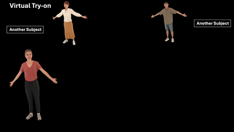
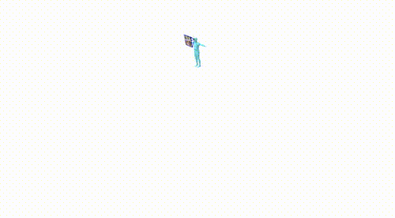
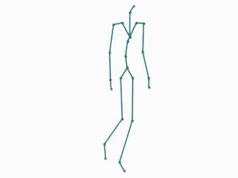
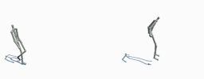
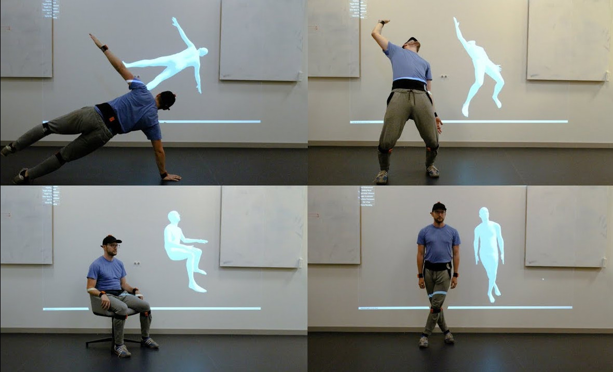

|
Manuel Kaufmann I am a computer scientist with a background in human-centric 3D Computer Vision. I previously worked as a tech lead in the executive team of the ETH AI Center and as postdoc at the AIT Lab at ETH Zurich, Department of Computer Science. I obtained my PhD in the AIT Lab under superivsion of Prof. Otmar Hilliges, co-advised by Prof. Markus Gross. I have completed my MSc at ETH Zurich with Prof. Hilliges as well and earned my BSc in Computer Science from the University of Basel under the supervision of Prof. Thomas Vetter. I taught Machine Perception at ETH Zurich. All lecture materials including video recordings from 2025 are publicly available. |
{kind=link}
ResearchI am interested in human-centric multimodal data acquisition pipelines, 3D human pose estimation from wearable sensors (e.g., IMUs and electromagnetic sensors) and single or multi-view images, 3D reconstruction of human avatars from images and video, and human motion modelling. For a selection of publications, see below. |
|
 |
Gaussian Wardrobe: Compositional 3D Gaussian Avatars for Free-Form Virtual Try-on
Zhiyi Chen*, Hsuan-I Ho*, Tianjian Jiang, Jie Song, Manuel Kaufmann, Chen Guo 3DV, 2026 project page / arXiv / video / code A compositional 3D Gaussian avatar representation that enables free-form virtual try-on of clothing from multiple sources. |

|
PHD: Personalized 3D Human Body Fitting with Point Diffusion
Hsuan-I Ho, Chen Guo, Po-Chen Wu, Ivan Shugurov, Chengcheng Tang, Abhay Mittal, Sizhe An, Manuel Kaufmann*, Linguang Zhang* ICCV, 2025 project page / arXiv / video Personalized 3D human body fitting using point diffusion for improved accuracy in body pose and shape reconstruction. |
|
ODHSR: Online Dense 3D Reconstruction of Humans and Scenes from Monocular Videos
Zetong Zhang, Manuel Kaufmann, Lixin Xue, Jie Song, Martin Oswald CVPR, 2025 project page / video An online Gaussian Splatting-based system for dense 3D reconstruction of both humans and their surrounding scenes from monocular video input. |
|
|
 |
EgoHDM: An Online Egocentric-Inertial Human Motion Capture, Localization, and Dense Mapping System
Bonan Liu*, Handi Yin*, Manuel Kaufmann, Jinhao He, Sammy Christen, Jie Song, Pan Hui SIGGRAPH Asia (TOG), 2024 project page / paper / video / code An egocentric-inertial system that jointly performs human motion capture, localization, and dense scene mapping online. |
|
ReLoo: Reconstructing Humans Dressed in Loose Garments from Monocular Video in the Wild
Chen Guo*, Tianjian Jiang*, Manuel Kaufmann, Chengwei Zheng, Julien Valentin, Jie Song, Otmar Hilliges ECCV, 2024 project page / paper / video / code Reconstructing humans wearing loose-fitting garments from in-the-wild monocular videos, handling challenging clothing dynamics. |
|
|
WorldPose: A World Cup Dataset for Global 3D Human Pose Estimation
Tianjian Jiang, Johsan Billingham, Sebastian Müksch, Juan Zarate, Nicolas Evans, Martin Oswald, Marc Pollefeys, Otmar Hilliges, Manuel Kaufmann, Jie Song ECCV, 2024 project page / paper / video / dataset A large-scale dataset captured from 2022 FIFA World Cup broadcasts for benchmarking global 3D human pose estimation in sports scenarios. |
|
|
HSR: Holistic 3D Human-Scene Reconstruction from Monocular Videos
Lixin Xue, Chen Guo, Chengwei Zheng, Fangjinhua Wang, Tianjian Jiang, Hsuan-I Ho, Manuel Kaufmann, Jie Song, Otmar Hilliges ECCV, 2024 project page / paper / video / code A holistic approach to jointly reconstructing humans and their surrounding 3D scene from a single monocular video. |
|
|
MultiPly: Reconstruction of Multiple People from Monocular Video in the Wild
Zeren Jiang*, Chen Guo*, Manuel Kaufmann, Tianjian Jiang, Julien Valentin, Otmar Hilliges, Jie Song CVPR, 2024 (Oral Presentation, Top 3.3%) project page / paper / video / dataset / code Reconstructing multiple interacting people from a single monocular in-the-wild video, handling occlusions and close contact. |
|

|
EMDB: The Electromagnetic Database of Global 3D Human Pose and Shape in the Wild
Manuel Kaufmann, Jie Song, Chen Guo, Kaiyue Shen, Tianjian Jiang, Chengcheng Tang, Juan Zarate, Otmar Hilliges ICCV, 2023 project page / paper / video / dataset / code A new dataset of global 3D human pose and shape in-the-wild, captured using electromagnetic sensors for accurate ground truth. |

|
ARCTIC: A Dataset for Dexterous Bimanual Hand-Object Manipulation
Zicong Fan, Omid Taheri, Dimitrios Tzionas, Muhammed Kocabas, Manuel Kaufmann, Michael Black, Otmar Hilliges CVPR, 2023 project page / paper / video / code A large-scale dataset capturing dexterous bimanual manipulation of articulated objects, useful for hand-object interaction research. |
|
|
X-Avatar: Expressive Human Avatars
Kaiyue Shen*, Chen Guo*, Manuel Kaufmann, Juan Zarate, Julien Valentin, Jie Song, Otmar Hilliges CVPR, 2023 project page / arXiv / video / code Expressive human avatars that capture body pose, facial expressions, and hand gestures in a unified model. |

|
Hi4D: 4D Instance Segmentation of Close Human Interaction
Yifei Yin, Chen Guo, Manuel Kaufmann, Juan Zarate, Jie Song, Otmar Hilliges CVPR, 2023 project page / arXiv / video / dataset / code A dataset and method for 4D instance segmentation of two people engaged in close physical interaction. |
|
 |
A Spatio-temporal Transformer for 3D Human Motion Prediction
Emre Aksan, Manuel Kaufmann, Peng Cao, Otmar Hilliges 3DV, 2021 project page / paper / video / code A spatio-temporal transformer architecture that jointly models spatial and temporal dependencies for 3D human motion prediction. |

|
EM-POSE: 3D Human Pose Estimation from Sparse Electromagnetic Trackers
Manuel Kaufmann, Yi Zhao, Chengcheng Tang, Lingling Tao, Christopher Twigg, Jie Song, Robert Wang, Otmar Hilliges ICCV, 2021 project page / paper / video / dataset / code 3D human pose estimation from sparse wireless electromagnetic trackers. |
|
 |
Convolutional Autoencoders for Human Motion Infilling
Manuel Kaufmann, Emre Aksan, Jie Song, Fabrizio Pece, Remo Ziegler, Otmar Hilliges 3DV, 2020 project page / paper / video / code Convolutional autoencoders for filling in missing frames in human motion sequences, enabling cleanup of noisy or incomplete motion capture data. |
|
Structured Prediction Helps 3D Human Motion Modelling
Emre Aksan*, Manuel Kaufmann*, Otmar Hilliges ICCV, 2019 project page / paper / video / code Incorporating the skeletal structure of the human body into the output layer improves 3D human motion modelling. |
|
|
 |
Deep Inertial Poser: Learning to Reconstruct Human Pose from Sparse Inertial Measurements in Real Time
Yinghao Huang*, Manuel Kaufmann*, Emre Aksan, Michael Black, Otmar Hilliges, Gerard Pons-Moll ACM Transactions on Graphics (Proc. SIGGRAPH Asia), 2018 project page / paper / video / dataset / code Real-time 3D human pose reconstruction from only six sparse IMU sensors, learning-based for the first time. |
Academic ServiceReviewing
Area Chair
Outstanding Reviewer Awards
|
|
Design inspired by Jon Barron's website. Thanks for providing the source code. |